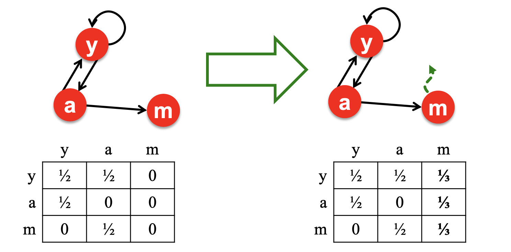

CS224W：图机器学习2¶
本页统计信息
-
本页约 2946 个字, 预计阅读时间 10 分钟。
-
本页总阅读量次
节点嵌入 Node Embedding¶
- 图表示学习的目标是提供一个统一的图特征提取方式，对于不同的图机器学习任务都可以使用，而节点嵌入就是指将图中的节点映射到嵌入空间中，用一个稠密的向量来表示不同的节点，而向量的相似度又决定了节点在图中的相似度，也就是说将整个网络进行了编码。
编码器和解码器¶
-
节点嵌入的目标就是对节点进行编码并映射到嵌入空间中，使得两个节点在嵌入空间中的相似度近似于节点在图中的相似度，而相似度和嵌入向量的形式都是需要定义的
-
因此节点嵌入的两个关键的组件就是编码器和相似度函数
$$ \mathrm{similarity}(u,v)=z_u^Tz_v $$

浅编码Shallow Encoder¶
最简单的编码器的形式就是一个简单的嵌入映射，即将节点通过矩阵运算直接转化成对应的嵌入向量，可以表示为： $$ \mathrm{ENC}(v)=Zv $$
- 其中Z就是一个\(d\times |V|\)维度的矩阵，存储了每个节点的d维嵌入向量，而v就是一个0-1向量，除了对应的节点那一列是1以外都是0
- 我们需要学习的就是Z矩阵，这种编码器下面每个节点都映射到一个单独的嵌入向量中
随机游走Random Walk¶
什么是随机游走¶
随机游走是一种用来定义图节点相似度的方法， \(z_u\)表示图节点u的嵌入向量，而概率\(P(v|z_u)\)表示在节点u的随机游走中遇到节点v的概率。
随机游走的过程即每次随机选择当前节点的一个邻居并“走”到这个邻居的位置上不断重复的过程，这个过程中将产生一个随机的节点序列，称为图的随机游走。而用随机游走定义的相似度就是u和v出现在同一个随机游走中的概率。这种方式计算相似度需要以下几个步骤：
- 使用一定的决策策略R来计算从u出发的随机游走经过v的概率
- 根据随机游走的结果优化嵌入函数并进行编码
为什么需要随机游走¶
- 可表达性：随机游走是一种灵活并且随机的相似度定义，并且包含了局部信息和更高阶的图中节点关系
- 高效性：不需要在训练的过程中考虑所有的节点对，只需要考虑在随机游走中出现的节点对
- 随机游走是一种无监督的特征学习
随机游走的优化¶
随机游走的目标是让学习到的嵌入向量中，相近的向量在图中更接近，对于一个节点u可以定义它在某种选择策略R下的随机游走中发现的邻居节点构成的集合是\(N_R(u)\)，对于一个给定的图\(G=(V,E)\)，我们的目标是学习出一个映射函数\(f(u)=z_u\)，根据极大似然估计，我们的目标函数可以确定为： $$ \max_f\sum_{u\in V}\log P(N_R(u)|z_u) $$ 即对于给定的节点u，我们希望通过随机游走中的表现来学习其特征的表示，而虽有游走可以进行一系列的优化，包括：
- 进行一个较短的固定长度的随机游走
- 对于每个节点u的邻居节点，允许邻居节点集合中出现重复的节点，出现的越多表明相似度越高,因此最大化上述目标函数可以等价于最小化下面的表达式：
而概率\(P(v|z_u)\)可以用sotfmax函数来进行参数化，选用softmax函数的原因是因为指数运算避免了负概率的出现，并且使得不同节点的相似度区分变得更加明显 $$ P(v|z_u)=\frac{\exp(z_u^Tz_v)}{\sum_{n\in V}\exp(z_u^Tz_n)} $$ 但是用上述办法来计算目标函数的话复杂度是非常高的，，可以采用负采样的方式来近似计算损失函数，这里用到了sigmoid函数来近似计算：
-
这种近似方法不计算全部节点而是只采样了K个随机的负样本，并且用sigmoid函数来近似指数运算，这里的k个negative nodes按照其度数成正比的概率进行选取
-
在得到了目标函数的近似形式之后，我们可以采用随机梯度下降法来对目标函数进行优化，定义 $$ \mathcal L^{(u)}=\sum_{v\in N_R(u)}-\log (P(v|z_u)) $$
-
对于一个节点i，和所有的节点j，计算其导数\(\frac{\partial\mathcal L^{(i)}}{\partial z_j}\)
-
更新每一个向量j直到收敛 $$ z_j=z_j-\eta\frac{\partial\mathcal L^{(i)}}{\partial z_j} $$
node2vec¶
现在的问题就变成了如何确定随机游走的策略，上面已经提到的策略有固定长度，没有偏见的选择策略，而node2vec是一种有偏见的随机游走策略，这种策略更加灵活并且达到了局部和全局的平衡
- 常见的采样邻近节点的方式有BFS和DFS，而BFS更注重局部的邻居结构，DFS则更偏向于全局
有偏见的随机游走¶
有偏见的定长随机游走策略R有两个参数，一个是返回参数p，代表了返回到前一个节点，另一个参数是出入(in-out)参数q，代表了随机游走过程中的BFS和DFS的比例
- 有偏见的随机游走需要记录当前的游走路径是从那里来的，在参数p中表示
- 每次走到新的节点的时候计算邻近节点的权重，选择权重最高(这里的权重其实也就是代表了走到这个节点的概率，当然是没有标准化的概率)的节点作为游走的下一个目的地
node2vec算法框架¶
- 计算随机游走的概率分布
- 对每个节点u，找到r条从u出发的不同的长度为l的随机游走
- 使用随机梯度下降法来优化node2vec
总结¶
- 这里其实还没太搞懂node2vec的真正含义，应该有时间去阅读一下提出node2vec的论文，虽然我觉得大概率没什么时间
- node2vec拥有线性的时间复杂度，并且上述算法框架中的三个步骤是可以并行的
图嵌入¶
- 图嵌入是将整张图或者子图映射到嵌入空间中，用一个向量来表示
两种简单的approach¶
- 方法1:将图嵌入等价于图中所有节点的嵌入向量之和
- 方法2:在途中引入一个虚拟节点代表整个图(子图)并进行嵌入
- 方法3:匿名游走嵌入
- 想法1:对匿名游走进行采样并且用每种匿名游走的发生次数来表示一个图，也就是说用这些随机游走发生的概率来表示整张图，选定一个长度L之后，建立一个向量代表所有长度为L的随机游走发生的概率来代表这张图
- 想法2:将匿名游走的嵌入结果进行合并
链接分析：PageRank算法¶
这一节的内容主要从矩阵的角度来进行图的分析和学习，我们可以将互联网看成一张巨大的图，里面的网页就是图中的一个个节点，而网页可以通过超链接可以跳转到别的网页，称为链接link，可以把这种关系作为图中的有向边，因此互联网中的网页构成一张大而稀疏的有向图，可以用一个邻接矩阵来表示。类似的结构有论文引用图等等。
但是图中每个节点并不都是同等重要的，可以通过一系列链接分析的方法来分析出不同节点的重要性，一般认为一个网站如果有很多链接，那么它往往就比较重要。而出链接和入链接又是两种不同的链接，又应该有不同的考虑。PageRank算法认为被重要的网页指向的网页也往往更重要。
PageRank算法模型¶
节点的权重¶
我们可以在网络图中定义\(d_i\)是一个节点的出度，而节点的权重就可以表示为： $$ r_j=\sum_{i\rightarrow j}\frac{r_i}{d_i} $$ 我们可以将这种表示形式矩阵化，用一个矩阵M来表示各个节点之间的权重关系，那么根据上面的定义可以得知： $$ M_{ij}=\frac{1}{d_j} $$ 这个矩阵M每一列的和都是1，我们可以用一个向量r来表示每个网页的重要程度，那么就有： $$ r=Mr $$
图中的随机游走¶
在任何一个时间t时假设访问到了网页i中，下一个时刻t+1则访问i指向的其中一个网页j，这样就构成了一次随机游走，用\(p(t)\)向量来表示t时刻每个网页被访问到的概率，那么这样一来就有： $$ p(t+1)=Mp(t) $$ 我们发现矩阵的权重向量r也可以表示随机游走的分布情况，进一步我们发现r其实就是矩阵M的特征向量，因此PageRank实际上就是矩阵M最大的的特征向量，我们一般用幂法可以得到矩阵M的最大特征向量。
如何求解PageRank¶
-
可以给pagerank赋予一定的初始值，然后通过公式\(r=Mr\)不断迭代直到r的变化小于一定的阈值之后才结束，得到最终的pagerank的结果，这种方法也就是幂法，求出的结果实际上是M的特征之中范数最大的那一个
-
问题在于：
-
有一些页面时dead end，没有跳转到其他网页的链接，这可能会导致“泄漏”
- Spider-Trap问题：所有的外部链接都在一个组内，即随机游走会陷入一个循环中
-
这些情况都会导致上述计算方法最后不收敛，因此要想办法解决这个问题
-
解决方法：
-
对于dead end问题，可以重新调整矩阵M中的内容：
 - 对于Spider-Trap问题，可以在每次做选择的过程中以一定的概率跳转到随机的网页中去，这样就可以从循环中跳出来
- Google矩阵上面的spider-trap问题的迭代形式
个性化的PageRank¶
- 通过几个特定的节点来衡量所有节点的rank，可以用带restart的随机游走高效计算，这是考虑到了不同用户之间的浏览偏好往往不同，不能用全局的所有节点作为衡量标准，这样一来可以实现个性化的推荐
创建日期: 2023年1月23日 18:40:25